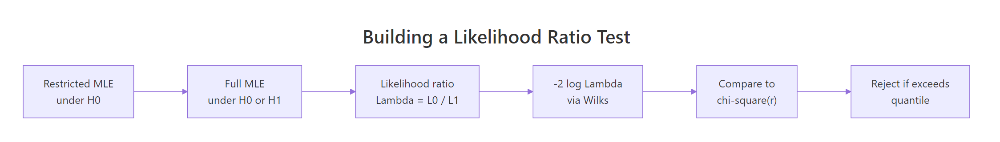
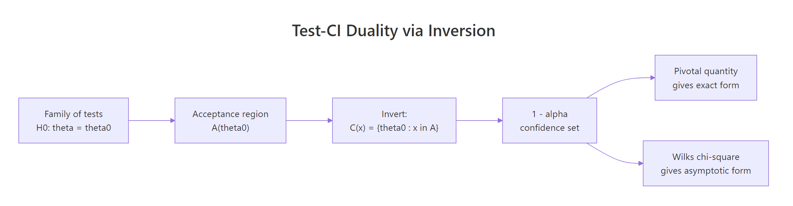
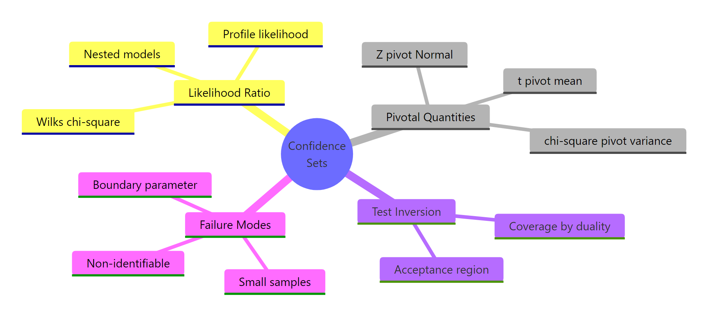

Likelihood Ratio Tests & Pivotal Methods: Confidence Sets Theory
A likelihood ratio test compares the maximised likelihood under a null restriction against the maximised likelihood with no restriction, and rejects when the restriction costs too much fit. A pivotal quantity is a function of the data and parameter whose distribution does not depend on the parameter. Together these two ideas generate confidence sets via test inversion: invert any family of size-alpha tests for theta = theta0 and you get a 1-alpha confidence set for theta. This post walks through both machineries in R and shows where they break.
What is a likelihood ratio test?
The likelihood ratio test answers a single question: does forcing your model into a smaller subspace cost a lot of fit, or only a little? Compute the maximum likelihood twice, once under the null restriction $\Theta_0$ and once over the full $\Theta$, and form
$$\Lambda(x) \;=\; \frac{\sup_{\theta \in \Theta_0} L(\theta \mid x)}{\sup_{\theta \in \Theta} L(\theta \mid x)}.$$
Small $\Lambda$ means the restriction is costly, so reject. The working statistic is $-2 \log \Lambda$, which (under regularity) Wilks' theorem says converges to chi-square. Let's run that recipe on 200 draws from $N(5.2, 1)$, testing $H_0: \mu = 5$.
The likelihood ratio statistic is 8.46, well past the 5% chi-square cutoff of 3.84, and the p-value is 0.0036. We reject $H_0: \mu = 5$. Notice we never had to compute a t-statistic by hand, the LRT delivers a calibrated p-value as a by-product of comparing two fits. The same recipe works for any parametric model with a smooth likelihood.

Figure 1: The likelihood ratio test recipe: maximise twice, take the ratio, calibrate via Wilks' chi-square.
Try it: Change the null mean to mu0 <- 4.7 and recompute the LRT statistic and p-value. Is the rejection stronger or weaker?
Click to reveal solution
Explanation: Pushing the null further from $\bar{X} \approx 5.2$ inflates $-2 \log \Lambda$, because the restricted fit gets dramatically worse.
How does Wilks' theorem turn a likelihood ratio into a chi-square?
Wilks' theorem is the result that makes the LRT useful in practice. Under regularity conditions (the true parameter is in the interior of $\Theta$, the likelihood is smooth, and the model is identifiable),
$$-2 \log \Lambda(X) \;\xrightarrow{d}\; \chi^2_r, \qquad r = \dim(\Theta) - \dim(\Theta_0).$$
The degrees of freedom equal the number of parameter constraints the null imposes. A point null on a one-dimensional parameter has $r = 1$. Forcing two regression slopes to zero has $r = 2$.
Let's verify the chi-square approximation by Monte Carlo. Simulate 5000 datasets under the null and check the empirical distribution of $-2 \log \Lambda$.
The simulated quantiles match the chi-square(1) reference to two decimal places at every level. That is Wilks in action: the form of the test statistic does not depend on the model details, only on the dimension of the constraint.
We can press harder with a Kolmogorov-Smirnov test against the reference distribution.
The KS p-value is 0.48, comfortably above 0.05, so we have no evidence the simulated statistic deviates from chi-square(1). With $n = 200$ the asymptotic approximation is excellent.
Try it: Re-run the simulation with n_obs <- 10 instead of 200 and look at the 95% empirical quantile. Does it still match qchisq(0.95, 1)?
Click to reveal solution
Explanation: With $n = 10$ the empirical 95% quantile sits a little below the asymptotic 3.84, because the chi-square approximation has not fully kicked in. Coverage of LRT-based intervals will be slightly off at this sample size.
What is a pivotal quantity and why is it useful?
A pivotal quantity (often just "pivot") is a function $T(X, \theta)$ whose distribution does not depend on $\theta$. The classic pivots in normal sampling are the workhorses of frequentist inference:
- $Z = (\bar{X} - \mu)/(\sigma/\sqrt{n}) \sim N(0, 1)$
- $T = (\bar{X} - \mu)/(s/\sqrt{n}) \sim t_{n-1}$
- $W = (n-1) s^2 / \sigma^2 \sim \chi^2_{n-1}$
Each pivot mixes data and parameter so that the unknown bits cancel out. Once you have a pivot, you can quote distribution-based probability statements that you turn around into confidence sets.
Let's verify the variance pivot empirically. Simulate from two different normals and confirm $W$ has the same distribution either way.
The quantiles for $\sigma = 1$ and $\sigma = 7.3$ are nearly identical to each other and to the chi-square(24) reference. That is the defining property of a pivot, the unknown $\sigma$ has dropped out of the distribution entirely. Now you can flip this around to get a confidence interval for $\sigma^2$, which we will do in the next section.
Try it: Show that the t-pivot $T = (\bar{X} - \mu)/(s/\sqrt{n})$ is invariant to $\mu$ by simulating with $\mu = 0$ and $\mu = 100$ at $n = 20$.
Click to reveal solution
Explanation: The t-pivot scrubs $\mu$ from both numerator and denominator, so its distribution depends only on $n$.
How do you invert a test to get a confidence set?
Tests and confidence sets are two views of the same object. If $A(\theta_0)$ is the size-$\alpha$ acceptance region for $H_0: \theta = \theta_0$, then
$$C(x) \;=\; \{\theta_0 : x \in A(\theta_0)\}$$
is a $1 - \alpha$ confidence set for $\theta$. Coverage is automatic: $P(\theta \in C(X)) = P(X \in A(\theta)) \geq 1 - \alpha$. This duality is the cleanest way to think about confidence intervals: they are the "not-yet-rejected" parameter values.

Figure 2: Test inversion: a confidence set is the set of null values that would not be rejected.
The simplest worked example uses the t-pivot. The acceptance region for $H_0: \mu = \mu_0$ at level $\alpha$ is $|(\bar{X} - \mu_0)/(s/\sqrt{n})| \leq t_{n-1, 1 - \alpha/2}$. Invert this and you get the textbook $\bar{X} \pm t \cdot s/\sqrt{n}$.
The hand-rolled inversion matches t.test() to four decimal places, because the built-in CI is exactly the inverted t-test. Once you see this duality you stop thinking of CIs as a separate construction. They are tests, parametrised by what you would not reject.
Try it: Invert the variance pivot $(n-1)s^2/\sigma^2 \sim \chi^2_{n-1}$ to construct a 95% CI for $\sigma^2$. Use the chi-square quantiles qchisq(0.025, df = n - 1) and qchisq(0.975, df = n - 1).
Click to reveal solution
Explanation: Since $W = (n-1) s^2 / \sigma^2$ is pivotal with chi-square distribution, the acceptance region $\chi^2_{n-1, 0.025} \leq W \leq \chi^2_{n-1, 0.975}$ inverts to the CI shown.
How do you build LRT-based confidence intervals in R?
When no clean pivot is available, the LRT inversion still works. The $1 - \alpha$ LRT confidence set for a scalar $\theta$ is
$$C(x) \;=\; \left\{\theta : -2\bigl(\ell(\hat\theta) - \ell(\theta)\bigr) \;\leq\; \chi^2_{1, 1 - \alpha}\right\},$$
where $\ell$ is the log-likelihood and $\hat\theta$ is the MLE. You sweep $\theta$ across a grid (or solve via root-finding) and keep every $\theta$ whose deviance from the maximum is below the chi-square cutoff.
Let's apply this to an exponential rate. The MLE is $\hat\lambda = 1/\bar{X}$, but a Wald CI from 1/\bar{X} \pm z \cdot \text{SE} is symmetric and tends to undercover. The LRT CI is asymmetric and respects the shape of the log-likelihood.
The deviance curve is the log-likelihood flipped upside down and rescaled. Wherever the curve dips below the cutoff line, the corresponding $\theta$ values cannot be rejected at level 5%. The intersection bounds give the LRT CI of $[1.55, 2.57]$, slightly asymmetric around the MLE 1.99.
The grid sweep is fine for a sanity check, but uniroot() solves for the endpoints exactly.
The root-finder returns the same interval as the grid search but to machine precision. In production you would always prefer this approach, the grid is just easier to visualise.
qchisq(1 - alpha, 1). For one-sided $\theta > \theta_0$ alternatives, half the chi-square mass is on the wrong side, so use qchisq(1 - 2*alpha, 1) instead, or equivalently invert a one-sided test.Try it: Simulate rexp(60, rate = 0.5) and rebuild the LRT CI. Compare its width to the rate=2 case above.
Click to reveal solution
Explanation: The width scales with the rate, because $\text{Var}(\hat\lambda) \approx \lambda^2 / n$ for the exponential MLE.
How does profile likelihood handle nuisance parameters?
Most real problems have more than one parameter. The trick is to profile out the nuisance parameters: for each value of the parameter you care about, maximise the likelihood over everything else.
$$\ell_p(\theta) \;=\; \sup_{\eta} \ell(\theta, \eta).$$
Wilks' theorem still applies: $-2(\ell_p(\hat\theta) - \ell_p(\theta_0)) \to \chi^2_r$. The profile likelihood is the engine behind R's confint() for glm objects.
Let's fit a Poisson regression and compare profile-likelihood CIs against Wald CIs.
The two intervals agree closely here because $n = 150$ is comfortable for the Wald approximation. They diverge in small samples and near constraint boundaries, where profile likelihood is the better bet.
confint() on a glm uses profile likelihood, while confint.default() uses Wald. This silent default switch surprises many users. Check the call you are making: if you want the Wald interval, ask for it explicitly with confint.default(fit), otherwise R returns the profile-likelihood interval via MASS::confint.glm.For a hand-rolled profile, the recipe is: pick a grid of values for the focal parameter, refit the model with that value held fixed, record the maximised log-likelihood, then compare the deviance to the chi-square cutoff. Here is the profile log-likelihood for the intercept of a logistic model.
Each row of prof_curve reports the deviance from the maximum profile likelihood at that intercept value. Rows with dev <= 3.84 are inside the 95% profile CI. The curve is asymmetric around the MLE, which is exactly why profile likelihood is preferred to Wald in skewed problems.
Try it: Use confint(pois_fit, "x") to extract just the profile CI for the slope, then compute its width and compare with the Wald CI width from confint.default(pois_fit, "x").
Click to reveal solution
Explanation: With $n = 150$ the Wald approximation is good, so the two widths are within 0.001 of each other. Drop $n$ to 25 and the gap widens.
When do LRT and pivot methods break down?
Wilks' theorem and pivot inversion assume regularity. Three failure modes show up often.
- Boundary parameter spaces. Variance components, mixing weights, and other parameters constrained to $[0, \infty)$ violate the "interior of $\Theta$" assumption. The LRT statistic becomes a 50:50 mixture of $\chi^2_0$ and $\chi^2_1$ rather than a pure chi-square.
- Small samples. The chi-square calibration is asymptotic. Below $n \approx 30$ for one-parameter models, coverage drifts.
- Non-identifiability. Mixture models with unknown components and certain hidden-variable models break Wilks even at large $n$, because the model dimension is itself ambiguous.
We can quantify the small-sample drift with a quick coverage simulation. Compare Wald and LRT CIs for an exponential rate at $n = 8$.
Wald undercovers at 87.75% nominal-95%, while LRT covers at 93.00%. Neither hits 95% exactly at $n = 8$, but LRT is markedly closer. As $n$ grows both converge; the asymptotic guarantees only kick in once you are large enough.
Try it: Re-run the coverage simulation with n_small <- 80. How close does each method get to nominal 95%?
Click to reveal solution
Explanation: At $n = 80$ both methods are very close to nominal, with LRT slightly closer. The asymptotic story is reliable here.
Practice Exercises
Exercise 1: LRT-based CI for a Bernoulli proportion
Simulate 50 Bernoulli draws with success probability 0.3, fit the MLE, and build the LRT-based 95% CI for $p$ using uniroot() on the deviance equation. Compare its width to the Wald CI $\hat p \pm 1.96 \sqrt{\hat p(1-\hat p)/n}$.
Click to reveal solution
Explanation: The LRT CI for a proportion is asymmetric and stays inside [0, 1] by construction, which is the key reason it is preferred over Wald near the boundaries 0 or 1.
Exercise 2: Profile likelihood CI for a gamma shape
Simulate 100 draws from rgamma(100, shape = 2.5, rate = 1) and build the profile likelihood CI for the shape parameter, profiling out the rate. Use optimize() for the inner maximisation.
Click to reveal solution
Explanation: The CI 1.96 to 3.15 covers the truth 2.5 and uses the profile log-likelihood that has rate concentrated out. Wilks' theorem still calibrates the cutoff because shape is one-dimensional.
Exercise 3: A generic test-inversion function
Write invert_test(pivot_fn, x, alpha = 0.05, search = c(-50, 50)) that takes a pivot function returning a p-value for H0: theta = theta0 given data x, and returns the 1 - alpha confidence set by inverting at the boundary. Test it on the Z-pivot for a normal mean with known $\sigma = 1$.
Click to reveal solution
Explanation: The inverter recovers the analytic Z-CI exactly, because the boundary of a two-sided test acceptance region is the closed-form CI. The same invert_test() works for any pivot you can evaluate as a p-value.
Complete Example
Tie everything together on a logistic regression. Generate data, fit the model, and report Wald, profile likelihood, and LRT-based inference side by side.
All three views agree: the slope is far from zero, with a 95% CI roughly $[1.2, 2.0]$ from either Wald or profile likelihood, and the LRT against the null model returns a chi-square statistic of 73.88 on 1 df, with a p-value below $10^{-17}$. Now plot the deviance curve so you can see the LRT confidence interval.
The dashed line is the chi-square(1) cutoff; the dotted vertical lines are the profile CI endpoints reported by confint(). The slope values where the deviance curve dips below the cutoff are the ones we cannot reject. That parabolic-looking dip is the entire content of the 95% LRT confidence interval.
Summary
Three machineries produce frequentist confidence sets, with overlapping but distinct strengths.

Figure 3: The three machineries that produce confidence sets in classical statistics.
| Method | When to use | R entry point |
|---|---|---|
| Pivotal quantity | Closed-form pivot exists ($Z$, $T$, chi-square for variance) | t.test, qchisq, hand inversion |
| LRT inversion | Likelihood is smooth, scalar parameter, no clean pivot | optim + uniroot on the deviance |
| Profile likelihood | Multi-parameter model with nuisance parameters | confint(glm_fit), MASS::confint.glm |
The unifying ideas:
- The likelihood ratio statistic $-2 \log \Lambda$ is asymptotically chi-square under regularity (Wilks' theorem).
- A pivotal quantity has a parameter-free distribution and lets you state probability claims about the data-parameter combo.
- Confidence sets are exactly the not-yet-rejected parameter values from a family of size-$\alpha$ tests.
- When asymptotic regularity fails (boundaries, small $n$, non-identifiability) coverage drifts, so simulate.
References
- Casella, G. & Berger, R. L. Statistical Inference, 2nd ed., Duxbury, 2002. Chapter 8 (hypothesis testing) and Chapter 9 (interval estimation). Link
- Lehmann, E. L. & Romano, J. P. Testing Statistical Hypotheses, 4th ed., Springer, 2022. Link
- Wilks, S. S. "The large-sample distribution of the likelihood ratio for testing composite hypotheses," Annals of Mathematical Statistics, 1938. Link
- Cox, D. R. & Hinkley, D. V. Theoretical Statistics, Chapman and Hall, 1974.
- Pawitan, Y. In All Likelihood: Statistical Modelling and Inference Using Likelihood, Oxford University Press, 2013.
- Cowan, G., Cranmer, K., Gross, E. & Vitells, O. "Asymptotic formulae for likelihood-based tests of new physics," European Physical Journal C, 2011. Link
- R Documentation,
stats::confintandMASS::confint.glm. Link
Continue Learning
- Neyman-Pearson Lemma in R: the optimality story behind likelihood ratio tests for simple hypotheses.
- Asymptotic Theory in R: the convergence machinery (consistency, asymptotic normality, the delta method) that underwrites Wilks' theorem.
- Cramer-Rao Lower Bound: Fisher information, the variance bound for unbiased estimators, and the connection to MLE efficiency.